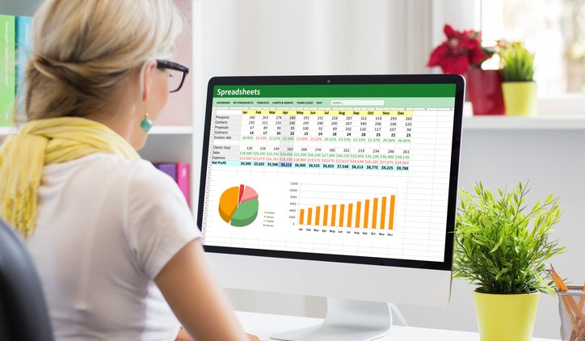

Exploratory Data Analysis on Rebrickable's LEGO Database - A Python Project
This project involved data exploration, data transformation and manipulation using Pandas, as well as data visualization using Matplotlib on Rebrickable's inventory database. This database has information on all available LEGO parts, sets and colors as of July 2017. This inspires an upcoming spin-off project that scrapes the most up-to-date Rebrickable's information to update this database.

The 8-Week SQL Challenge
My commitment to maintaining and improving my SQL skills with the help of Danny Ma's 8-week SQL challenge. As the name suggests, there are 8 challenges that are designed to be tackled each week. You are more than welcome to check out how I progress with the challenge!
Marketing Vendor Analytics - Power BI Dashboard
This self-serve dashboard was prepared and refreshed for marketing leaderships, budget owners and relevant business stakeholders on a monthly basis. This allows for a dynamic overview of top vendor expenses, as well as identification of cost-saving opportunities.

Business Performance Analysis - An Excel Analysis and PowerPoint Presentation
This project involved a comprehensive analysis of a company's annual biodiversity summit, emphasizing Excel skills in data cleaning, transformation and visualization. The accompanying PowerPoint slides showcase the ability to succinctly communicate complex data-driven findings on event profitability, logistics, and participant diversity to the chairman and board of directors for decision-making.
Marketing Spend Analytics - Tableau Dashboard
This dashboard was prepared and refreshed for marketing leaderships on a monthly basis, allowing a static overview of their burn rates and to adapt their business decisions accordingly.
Exploring HR Analytics - A More Advanced SQL Project
Hosted on PostgreSQL, this project showcases my ability to write more advanced SQL queries (common types of joins, subqueries, common table expressions (CTEs) and window functions). The use case is to provide relevant insights and help management answer questions that would inform recognition, reward and compensation policies.
Classification Prediction of Household Income - A Python Project
This project involved data cleaning, data exploration, feature engineering with Pandas and data visualization using Matplotlib on 0.5 million records of US Census Bureau in 2020-2021. Predicted income level (high or low) of a household based on demographic predictors, using different classification methods in Scikit-learn such as Logistic Regression, Random Forest, Bagging, etc. and gained an accuracy of 0.85.
Netflix Q1 2022 Financial Performance - Tableau Dashboard
This dashboard was created in early 2022 at the start of my Tableau journey when inspired by Netflix's news of declining subscribers at the time. This is a reporting dashboard for Netflix’s management to see the latest financial performance.
Exploring ESG Indicators - A SQL Project
Using the SQLite dialect, I put in practice and demonstrate my ability to write basic SQL queries to explore and obtain insights from ESG (Environment/Social/Governance) indicators. These insights are intended to help shareholders and investors better understand how ESG indicators evolve over time and compare companies in the same sector for benchmarking.